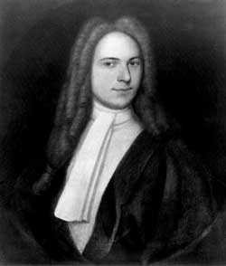

|
by Stefan Bielinski Johannes Schuyler, Jr. was born in Albany in October 1697, the third child of businessman Johannes and the widow Elsie Staats Wendell Schuyler.  He grew up in the Schuyler family home with a dozen siblings from his mother's first and second marriages. Johannes Jr. married Cornelia Van Cortlandt at the New York City Dutch church in 1723. The marriage brought a large dowry and substantial inheritance from one of the wealthiest families in the province. Cornelia and Johannes had ten children. All of their births were inscribed in his bible that survives in the collection of the Schuyler Mansion State Historic Site. He followed his father into frontier and farm business and to lucrative government contracts. He even added acreage to his family's already extensive holdings. During the 1730s, he was appointed to the Albany Commissioners of Indian Affairs. In 1739, his father deeded him the family farm at the Flats. By the time he turned forty, Johannes had emerged as the most likely man to lead the Albany Schuyler family. He was elected first ward alderman in 1738 and 1739. The governor of New York appointed him mayor of Albany in September 1740. He was re-nominated in 1741 but did not take the oath of allegiance required of officeholders.Johannes Schuyler, Jr. had become ill. Stating he was sick, Johannes filed his will in October 1741. It left the entire estate to Cornelia - including the property she had inherited from her father, as long as she remained a widow. She was charged with the education of their children. After her death, the estate would be divided among their five living children. He died on November 5, 1741 at age forty-four. He was buried in the family plot at Schuyler Flats.
Portrait by an unknown limner about 1725. Collection of the New-York Historical Society. This portrait has been reproduced widely. |